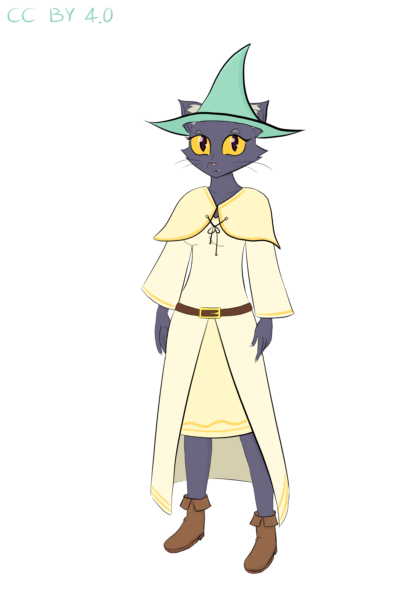

Project page

Elara Wrenford
Meet Elara, a cat with a world of her own. She's an original character drawn by hand in Krita, one paw-stroke at a time. This is where her designs, sketches, and little details come together as she gradually takes shape.
- First Name: Elara
- Surname: Wrenford
- Age: 22 Years Old
- Gender: Female
- Height: 168 cm
- Weight: 58 kg
- Species: Anthropomorphic Cat
- Occupation: Alchemist
- Relationship status: Single
- Fur Color: Dark gray
- Eye Color: Bright yellow
- Foot Type: Plantigrade feet
The Game
Elara is more than an original character. She's the protagonist of my planned open-source game, The Alchemist Cat: Adventure of Elara
The game is envisioned as a cozy adventure about a little alchemist cat and the world around her. It's still in pre-production, with no playable version or source code available yet. The source code is planned to be released as free and open-source software under the GNU General Public License v3.0 (GPLv3)
The game has its own website: The Alchemist Cat
Tools of this Alchemy
Graphics tablet: XP-PEN Deco Fun S (CT640)
Software: Krita
Hardware: ASUS X450CP, Intel Pentium 2117U, 4 GB RAM, and a 1 TB HDD spinning at 5,200
RPM
Think I'm kidding about the laptop? No. It's an old machine, but it's my trusty companion. I've never thrown it away, and it still works well for my projects. I have a newer computer, but... I still love my old laptop! ❤️
Personality & Habits
Elara is a kind, gentle, and curious cat with a soft heart. She feels deeply, even if she doesn't always express her emotions openly.
She's sensitive to the feelings of others and tries to treat everyone with kindness. Although she's usually calm, she can still feel worried, sad, excited, or overwhelmed, just like anyone else. Being gentle doesn't mean she never struggles.
What Does Elara Actually Do?
Elara isn't a witch! She's an alchemist who enjoys exploring the natural world and learning about the materials she discovers. Her work involves plants, mushrooms, crystals, and the chemical processes behind them.
Thanks
Thanks to Makkon (Ben Hale) for helping me improve my art skills 💜
Have a question or suggestion about Elara?
I'd love to hear what you think about Elara! =^w^=
Feel free to contact me!